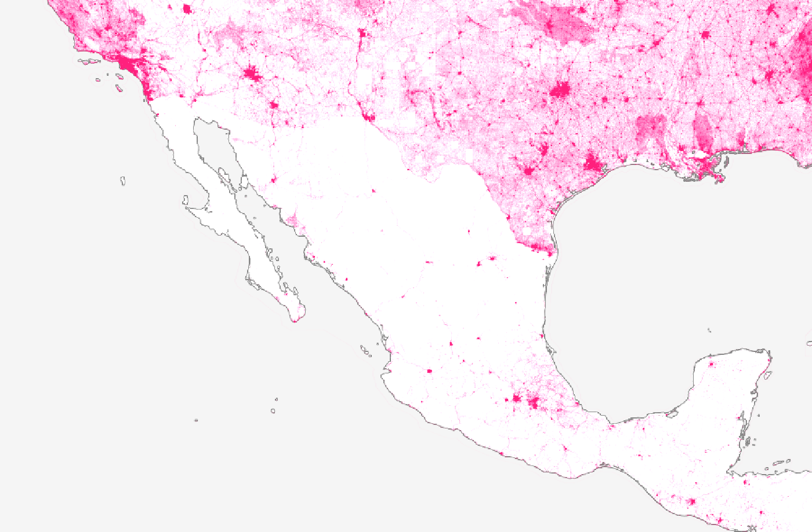
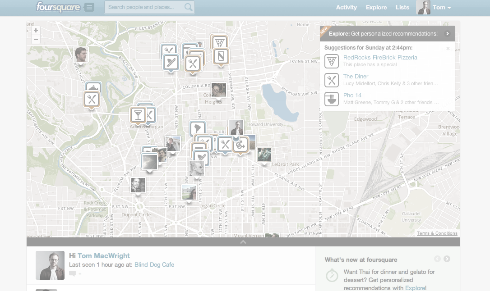
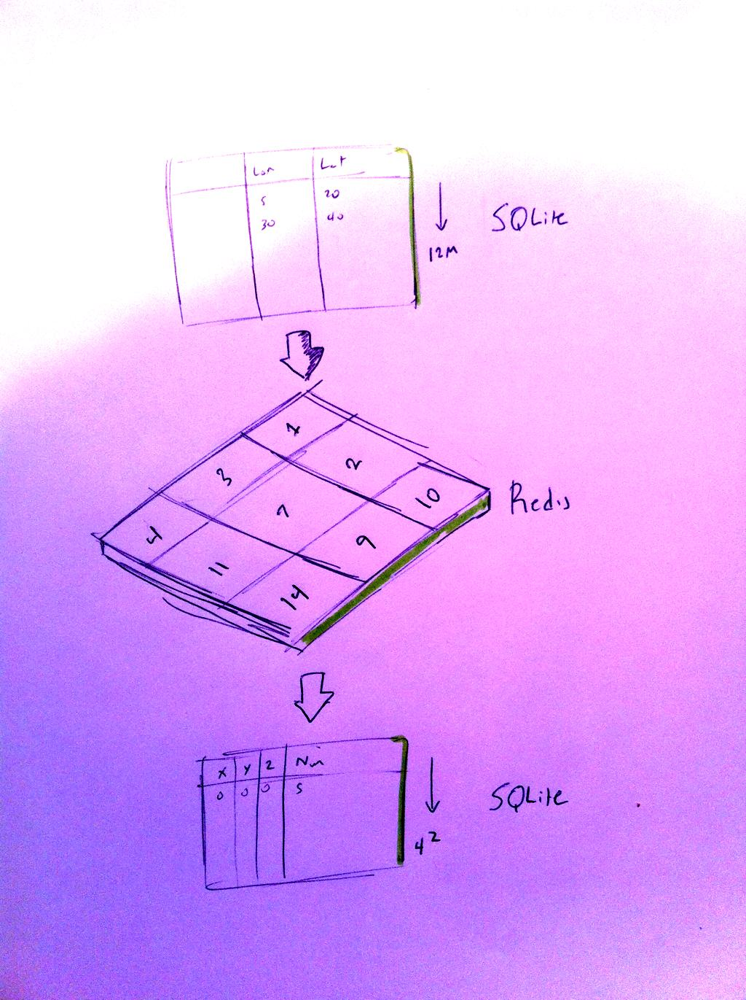
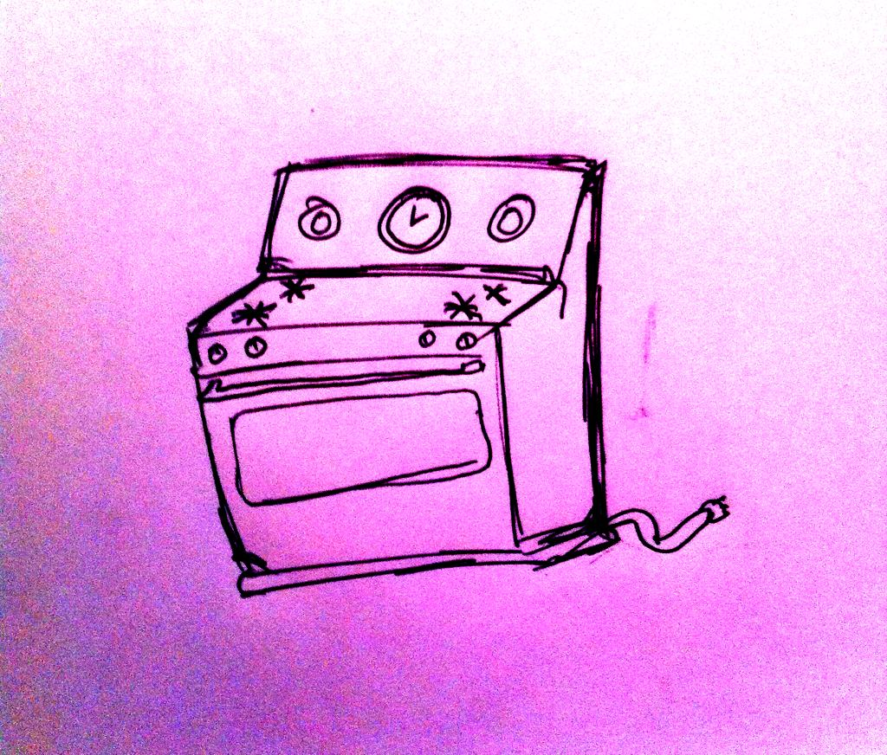

big data with node.js, sqlite, redis, polymaps
big-ish data with node.js, sqlite, redis, polymaps, and maps
by me, @tmcw
problem: openstreetmap is not quite complete
problem: openstreetmap is not quite complete
and people notice when it's their town that's missing
'MapBox Streets'
~240 gigabyte
SQLite database of tile images
→ 4.6MB SQLite database of street density
Lessons:
Lessons:
Flow-control stuff breaks usually
Lessons:
you can't keep track of all callback arg-results
function run(s) {
asyncFn(function(err, rows) {
// do stuff
if (step < stepend) {
step++; run(step);
}
});
} run(step = 0);
recursion!
crossing the bindings gap
for (var i = 0;
i < 1e9; i++) {
var x = callToCLib(i, {
start: i,
limit: 1
});
// do stuff with x
}
for (var i = 0;
i < 1e9; i += 100) {
var x = callToCLib(i, {
start: i,
limit: 100
});
// do stuff with x
}
(aka loop unrolling, duff's device, batching)
redis is a darn good hammer
for this project: needed a big hash of incremented numbers
write
rclient.incrby(key, val);
rclient.sadd('keys', key);
read
rclient.spop('keys',
function(err, k) {
rclient.get(k, function() {
});
});
aka a hacky list-indexable hash table 
redis ♥ numbers and is super-fast for prototyping
next: prototyping a visualization

next: prototyping a visualization (aka
doing it live)

tactic: use canvas
tactic: use canvas
abstract only when necessary
tactic: use canvas
with node-canvas as your escape hatch to other sorts of output
node-canvas!:
fast enough, pixel-perfect, easy-ish to use
polymaps stays out of your way.
// this is a valid layer
po.layer(function(tile) { }))
iterate in-browser: colors & scales are finicky
iteration speed > screen speed
when you're done: baking.
porting stuff to node: only stickler is d3
but it's
so worth itvar scale = d3.scale.linear()
.range([0, 1]).clamp(true)
.domain([0, 10000]);
scale(5000);
follow the dependencies, and
var d3 = require('./d3_compat.js')bake tiles: using node-sqlite3 for dbing, node-canvas for rastering
a few hours later
pictures!